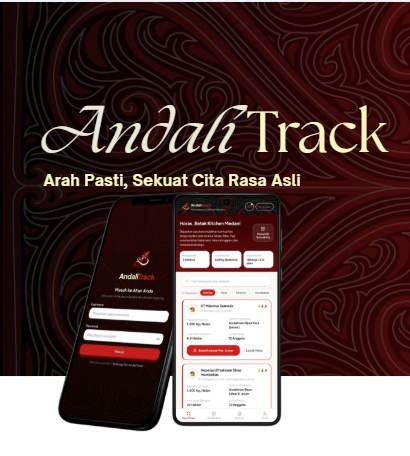

Agrotech & Supply Chain
AndaliTrack Marketplace & Traceability
Solusi rantai pasok dan platform digital terintegrasi untuk komoditas rempah andaliman di kawasan Danau Toba.
ICT Business
Pitch Deck
Figma UI